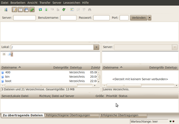
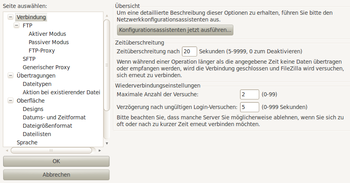

FileZilla
Dieser Artikel wurde für die folgenden Ubuntu-Versionen getestet:
Ubuntu 16.04 Xenial Xerus
Ubuntu 14.04 Trusty Tahr
Zum Verständnis dieses Artikels sind folgende Seiten hilfreich:
FileZilla  ist ein komfortabler und schneller FTP- und SFTP-Client mit sehr vielen Möglichkeiten. Er unterstützt unter anderem die Wiederaufnahme abgebrochener Datentransfers, die Verwaltung verschiedener FTP-Sites, SSL, Drag&Drop und eine Menge mehr. Die Anwendung läuft nach der Installation in der systemweit eingestellten Sprache. Das plattformübergreifende Programm ist weit verbreitet und hat Klassiker wie gFTP abgelöst.
ist ein komfortabler und schneller FTP- und SFTP-Client mit sehr vielen Möglichkeiten. Er unterstützt unter anderem die Wiederaufnahme abgebrochener Datentransfers, die Verwaltung verschiedener FTP-Sites, SSL, Drag&Drop und eine Menge mehr. Die Anwendung läuft nach der Installation in der systemweit eingestellten Sprache. Das plattformübergreifende Programm ist weit verbreitet und hat Klassiker wie gFTP abgelöst.
Installation¶
 FileZilla kann aus den offiziellen Paketquellen installiert [1] werden:
FileZilla kann aus den offiziellen Paketquellen installiert [1] werden:
filezilla (universe)
 mit apturl
mit apturl
Paketliste zum Kopieren:
sudo apt-get install filezilla
sudo aptitude install filezilla
Nach der Installation findet sich ein Menüeintrag unter
"Anwendungen -> Internet -> FileZilla"
PPA¶
Philip Muškovac bietet ein "Personal Package Archive" (PPA) [2] mit der aktuellsten Version (auch für ältere Ubuntu-Versionen) an. Achtung: In diesem PPA ist nicht nur FileZilla enthalten, so dass man die Paketquelle nach der Installation besser wieder deaktiviert, um Kollisionen mit anderen Programmen aus den offiziellen Paketquellen zu vermeiden. Nach dem Einbinden und Aktualisieren der Paketquellen erfolgt die Installation wie oben angegeben.
Adresszeile zum Hinzufügen des PPAs:
ppa:yofel/ppa
Hinweis!
Zusätzliche Fremdquellen können das System gefährden.
Ein PPA unterstützt nicht zwangsläufig alle Ubuntu-Versionen. Weitere Informationen sind der  PPA-Beschreibung des Eigentümers/Teams yofel zu entnehmen.
PPA-Beschreibung des Eigentümers/Teams yofel zu entnehmen.
Damit Pakete aus dem PPA genutzt werden können, müssen die Paketquellen neu eingelesen werden.
Verwendung¶
 Beim ersten Start werden Verwendungshinweise angeboten. Wer diese ausschlägt, kann das auch später noch nachholen, indem man im Menü "Hilfe -> Begrüßungsdialog anzeigen..." aufruft. Die angebotene Hilfe ruft die entsprechenden englischen Wiki-Seiten (siehe Links) im Browser auf.
Anschließend öffnet FileZilla ein übersichtliches Fenster (siehe oben). Um mit der Anwendung arbeiten zu können, benötigt man FTP-Zugangsdaten. Diese Daten stellt im Regelfall der Anbieter des Webspeicherplatzes (Webspace) zur Verfügung. Benötigt wird folgendes:
Servername
Benutzername
Passwort
Verbindung herstellen¶
Nach dem Start werden die Zugangsdaten in die vorgesehenen Felder eingetragen. Das Feld Port kann frei bleiben, dann wird automatisch Port 21 (der Standard-Port für FTP) genutzt. Abschließend auf "Verbinden" klicken.
Im linken Fensterbereich befinden sich die lokalen Dateien (eigener Rechner), im rechten Fensterbereich die des jeweiligen (entfernten) Servers. Nun markiert man die lokalen Dateien, die auf den Server kopiert werden sollen und zieht sie bei gedrückter linker Maustaste in das rechte Fenster. Alternativ kann auch das Kontextmenü via  genutzt werden, um Dateien zuerst in eine Warteschlange abzulegen, um sie von dort später in einem Rutsch hochzuladen. Falls eine Datei dort schon vorhanden sein sollte, wird nachgefragt, wie weiter verfahren werden soll (z.B. Überschreiben).
genutzt werden, um Dateien zuerst in eine Warteschlange abzulegen, um sie von dort später in einem Rutsch hochzuladen. Falls eine Datei dort schon vorhanden sein sollte, wird nachgefragt, wie weiter verfahren werden soll (z.B. Überschreiben).
Die wichtigsten Funktionen sind über Symbole erreichbar. Die Erläuterung der Schaltflächen in der obersten Zeile liefern die programminternen Tooltipps und die nachfolgende Tabelle:
| FileZilla | |
| Schaltfläche | Beschreibung |
| Servermanager (Lesezeichen) | |
| Übertragungsprotokoll anzeigen/verbergen | |
| lokale Dateien anzeigen/verbergen | |
| entfernte Dateien anzeigen/verbergen | |
| Warteschlange anzeigen/verbergen | |
| Anzeige aktualisieren | |
| Warteschlange starten/stoppen | |
| aktuelle Aktion abbrechen | |
| Verbindung trennen | |
| letzte Verbindung wiederherstellen | |
| Filter aktivieren | |
| Vergleichsanzeige aktivieren (um Unterschiede zwischen lokalen und entfernten Dateien anzuzeigen) | |
| Synchronisation aktivieren | |
| nach Dateien suchen (rekursiv) | |
Nützliches¶
Es ist nicht bei jedem Verbinden erforderlich, die Zugangsdaten einzugeben. Wenn nur mit einer Webseite gearbeitet wird, kann auch die Schaltfläche "Wieder verbinden" genutzt werden, um sich erneut mit dem letzten Server zu verbinden. Durch einen Klick wird die Verbindung hergestellt.
Wer mehrere Server fest im Programm verankern möchte, sollte stattdessen den Servermanager nutzen. Weitere Hinweise finden sich auf der deutschsprachigen FileZilla-Seite und dem englischen FileZilla-Wiki (siehe Links).
Einstellungen¶
 Über "Bearbeiten -> Einstellungen" gelangt man zur Konfiguration des Programms. Diese ist in die Punkte
Verbindung
Übertragungen
(Programm-)Oberfläche
Bearbeiten von Dateien
Logging (Übertragungsprotokoll)
Debug (Fehlerprotokoll)
untergliedert. Die Voreinstellungen reichen aber für die allermeisten Anwendungszwecke aus, so dass Änderungen nicht unbedingt erforderlich sind.
Links¶
 weitere FTP-Clientprogramme
weitere FTP-ClientprogrammeExtern¶
Wiki
- DokumentationFileZilla
 - deutsche Seite
- deutsche SeiteTransportverwalter - FTP-Client Filezilla
- LinuxUser, 04/2008
- Erstellt mit Inyoka
-
 2004 – 2017 ubuntuusers.de • Einige Rechte vorbehalten
2004 – 2017 ubuntuusers.de • Einige Rechte vorbehalten
Lizenz • Kontakt • Datenschutz • Impressum • Serverstatus -
Serverhousing gespendet von